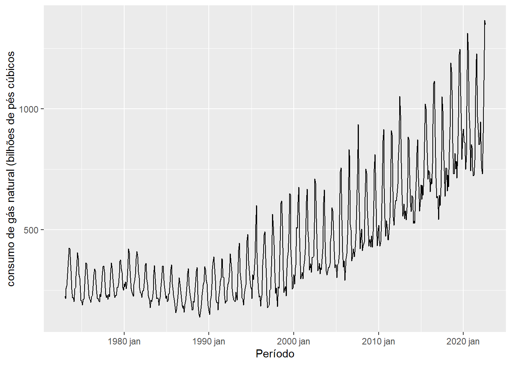
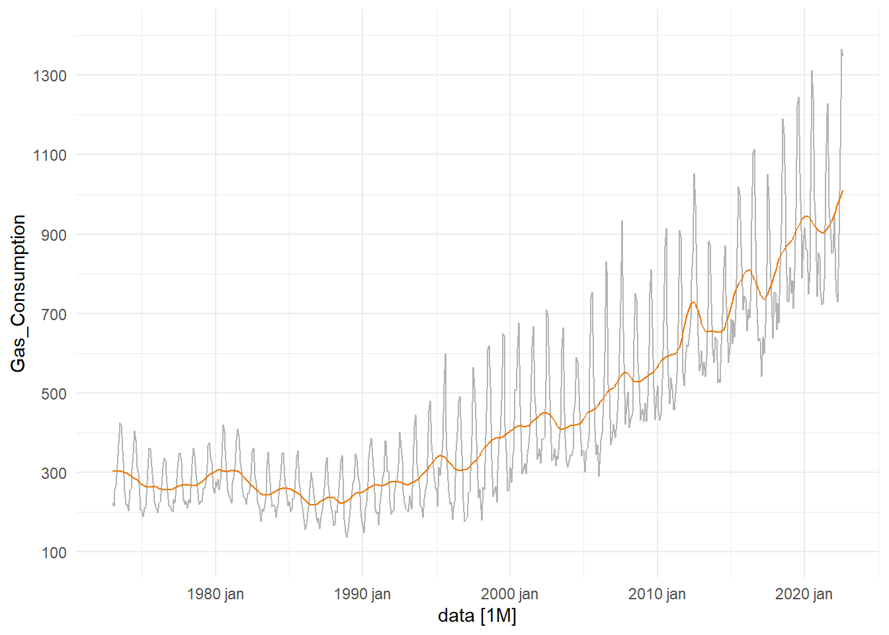
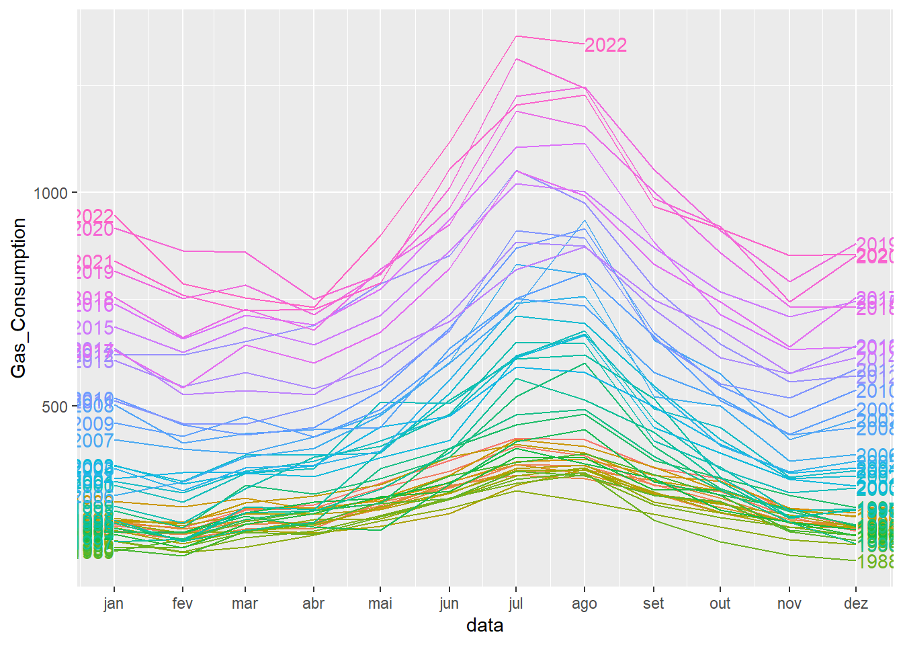
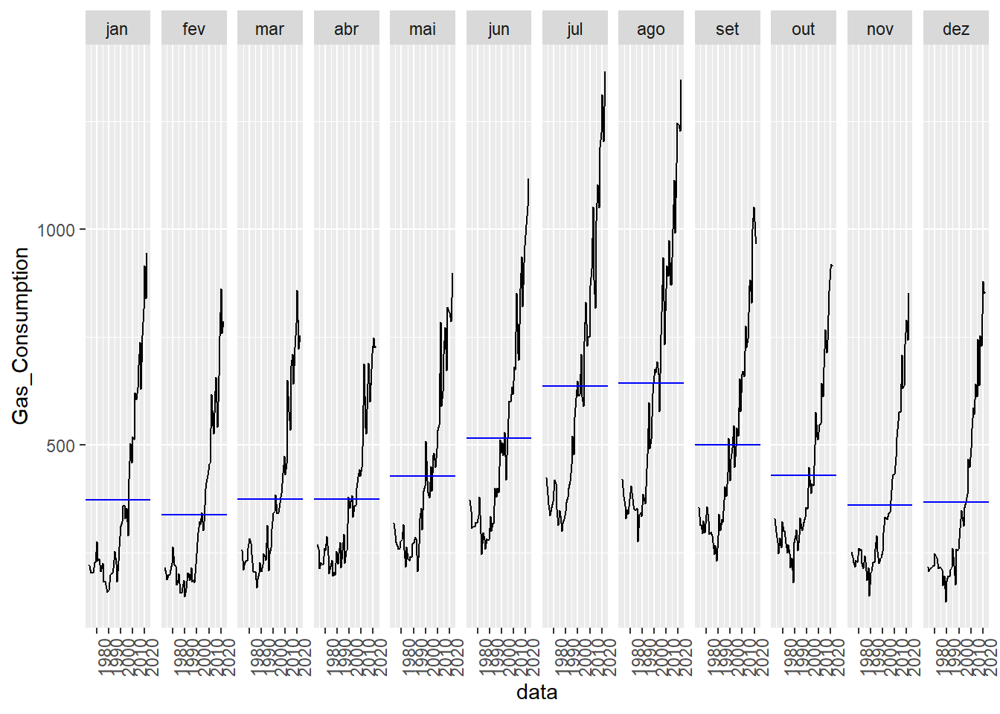
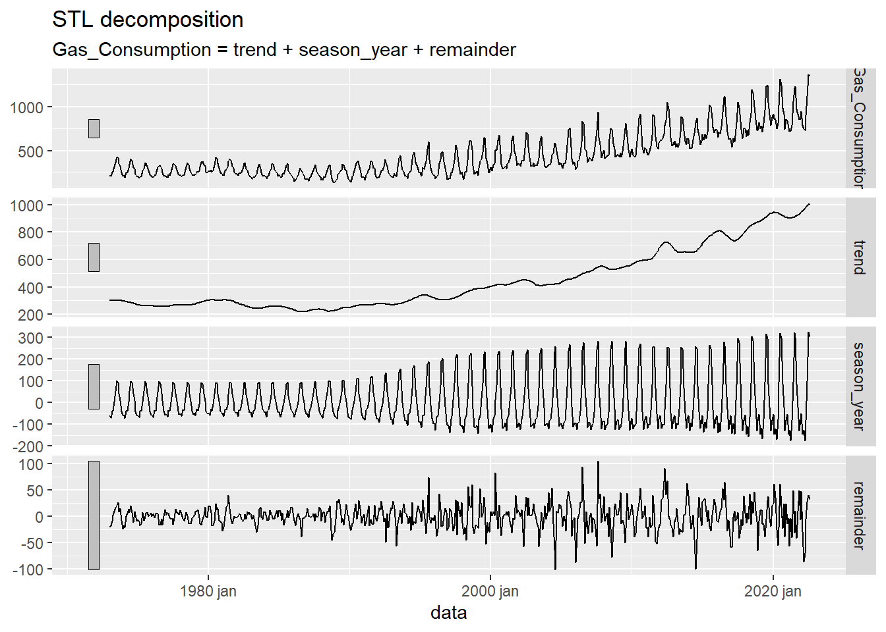
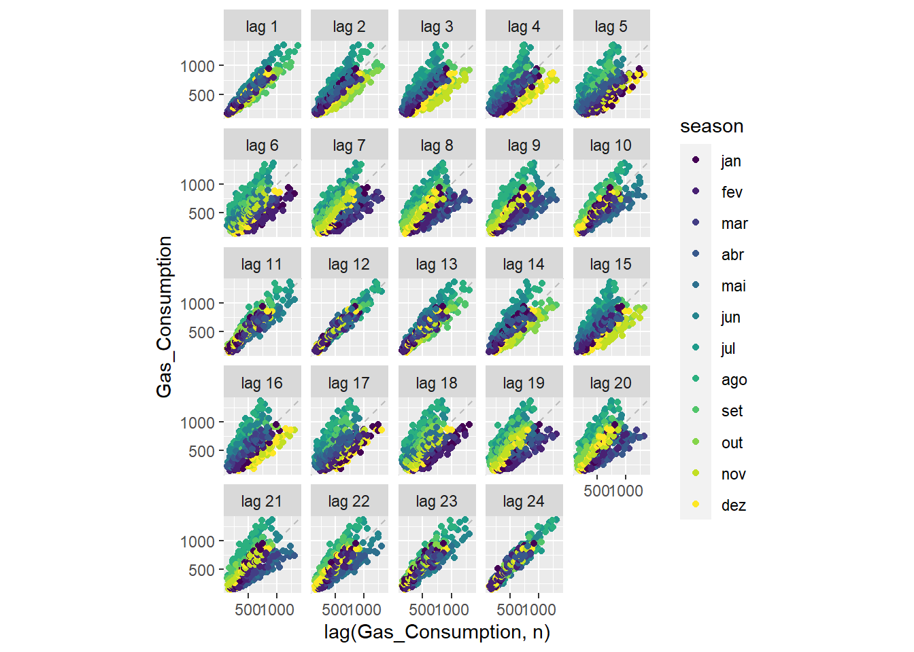
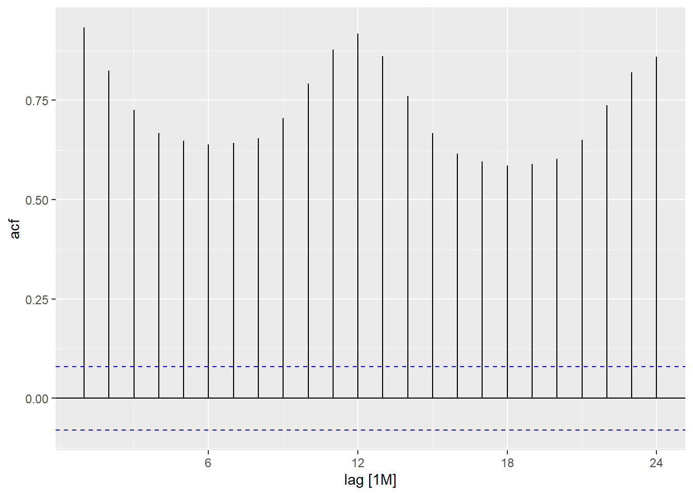

Trabalho Final- Modelo preditivo de séries temporais.
Série Temporal
A série temporal corresponde à geração mensal de eletricidade nos EUA. Trata-se do consumo de gás natural para geração de eletricidade, em bilhões de pés cúbicos, durante o período de janeiro de 1973 a agosto de 2022. A série é fornecida pela Administração de Informação de Energia dos EUA. http://www.eia.doe.gov/emeu/mer/elect.html.
Running Code
When you click the Render button a document will be generated that includes both content and the output of embedded code. You can embed code like this:
Code
dados <- dados %>%
mutate(ano = as.numeric(str_split(Month, " ",simplify = TRUE)[,1]),
mes = str_split(Month, " ",simplify = TRUE)[,2],
mes_n = case_when(mes == "janeiro" ~ 01,
mes == "fevereiro" ~ 02,
mes == "março" ~ 03,
mes == "abril" ~ 04,
mes == "maio" ~ 05,
mes == "junho" ~ 06,
mes == "julho" ~ 07,
mes == "agosto" ~ 08,
mes == "setembro" ~ 09,
mes == "outubro" ~ 10,
mes == "novembro" ~ 11,
mes == "dezembro" ~ 12))
dados_ts <- dados %>%
select(Gas_Consumption,ano,mes_n) %>%
mutate(data = yearmonth(paste(ano,mes_n,sep = " "))) %>%
as_tsibble(index = data)Code
dados_ts %>%
autoplot()+labs(x="Período",
y="consumo de gás natural (bilhões de pés cúbicos")
Code
components(dcmp) %>%
as_tsibble() %>%
autoplot(Gas_Consumption, colour = "gray70") +
geom_line(aes(y=trend),col = "darkorange2")+
theme_minimal()+scale_y_continuous(limits = c(100,1400),
breaks = seq(100,1400,200))
Code
dados_ts %>%
gg_season(Gas_Consumption,labels = "both")
Code
dados_ts %>%
gg_subseries(Gas_Consumption)
Code
components(dcmp) %>% autoplot()
Code
dados_ts %>%
gg_lag(lag = 1:24, geom = "point")Plot variable not specified, automatically selected `y = Gas_Consumption`
Code
dados_ts %>%
ACF(Gas_Consumption, lag_max = 24) %>%
autoplot()
You can add options to executable code like this
[1] 4The echo: false option disables the printing of code (only output is displayed).